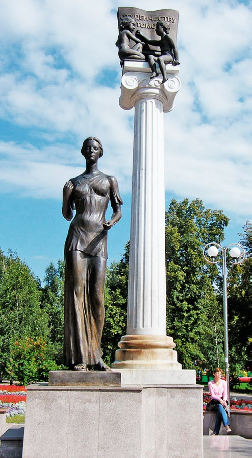

Памятник Чехову
Найдите памятник Антону Павловичу Чехову на набережной реки Томи. Сделайте фото с писателем и покажите красивый вид на реку.

Деревянное кружево
Прогуляйтесь по улице Чехова и найдите три самых красивых деревянных дома с резными наличниками. Сфотографируйте архитектурные детали.

Студенческий символ
Найдите памятник студенчеству на Новособорной площади. Сделайте селфи с бронзовым монументом.

Вид на Томск
Поднимитесь на Воскресенскую гору и сфотографируйте панораму Томска. Покажите на фото купола церквей и исторический центр.